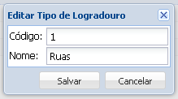

• Editar tipo de logradouro existente
1. Selecione o tipo de logradouro que deseja editar
2. Clique no botão Editar
3. Abrirá uma nova janela

Altere o campo Nome como a alteração desejada do tipo de logradouro e clique no botão Salvar, não queira alterar o tipo de Logradouro clique no botão Cancelar.